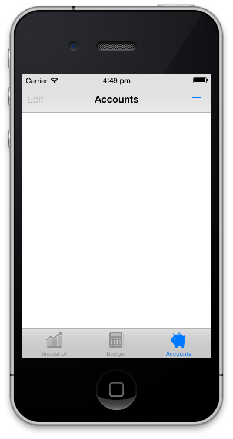
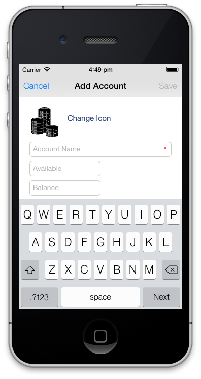
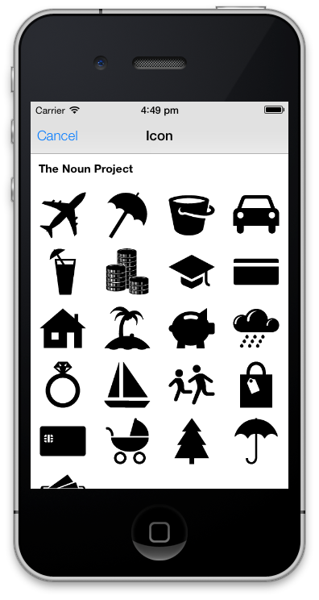
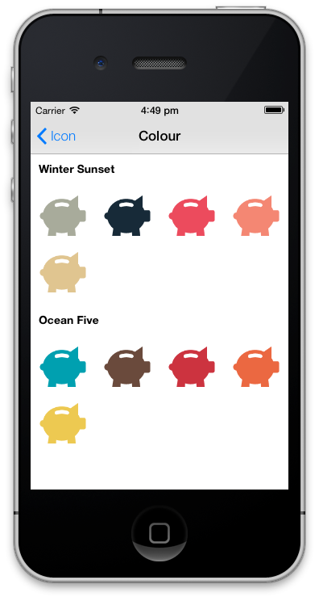
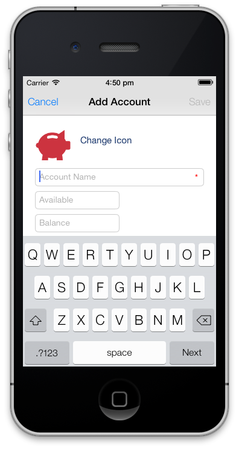
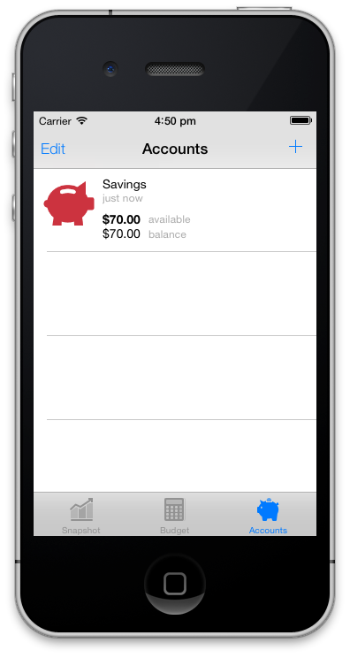
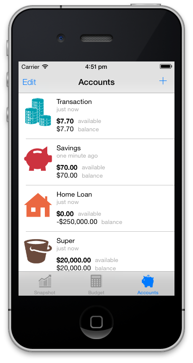
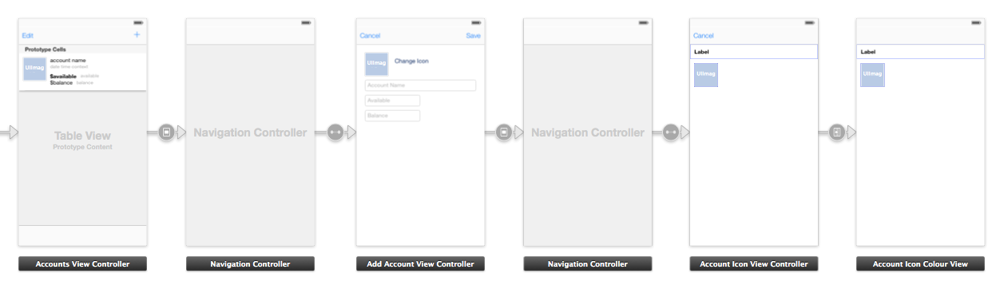

I believe the best way to understand something is to get your hands dirty, so I decided to build the front end part of an app idea that I’ve had for a while as an iOS 7 app.
While using iOS 7 for the last week or so, I’ve been thinking about the UI and UX. Of course, Metro (design language) has been around for a while thanks to Microsoft, but the Metro apps I’ve used feel dull. iOS 7 feels surprisingly refreshing.
One of the views in the app I’m building needs a list of things that the user creates - a typical pattern in many apps. iOS has a UITableViewController, so technically it’s an easy problem to solve. In terms of the design of the UI and UX it’s a little bit more complicated.
Let me talk you through what I call the UserXListView(tm) pattern in 7 images of the iOS 7 app I’ve started building.
1. Empty List View
Ok. We have a list view. That + in the top right corner is staring at her. Tap me! Tap me!

2. Add Item (with default Icon and Colour)
She taps +. She knows that she’s going to create something. What’s the first decision? What to name it? No. The first decision is an emotional one. What’s this thing going to look like.

Technically this is a modal segue; either Cancel and go back, or enter the required information and Save.
3. Item Icon
She taps Change Icon. This is where it gets interesting. The icons are in groups and are all black so that they are easy for her to judge equally. In this instance there’s only one group of simple icons from The Noun Project, that are visually related to the thing that she is creating.

Once again this is a modal segue; either Cancel and go back, or give the required information, which in this instance is selecting an icon. We use a UICollectionViewController that’s dynamic. We define the icon groups and icons as follows.
icons = [NSArray arrayWithObjects:
[NSArray arrayWithObjects:@"The Noun Project", @"airplane", @"beachumbrella", @"bucket", @"car", @"cocktail", @"coins", @"college", @"creditcard", @"house", @"island", @"piggybank", @"rain", @"ring", @"sailboat", @"school", @"shoppingbag", @"smartcard", @"stroller", @"tree", @"umbrella", @"wallet", nil],
nil];4. Item Icon Colour
She taps the piggy bank icon (they’re cute). Now she can personalise the icon even further by selecting a colour from different groups of colour palettes. She can select a colour from the same palette to match all her things, or mix and match colours from different colour palettes. The choice is hers. If she doesn’t like the icon in any of these colours she can either tap < Icon, or as a nice feature of iOS 7, swipe left to right inside where the icons are located and the view will slide off the top to the right and she will be taken back to the black icons.

This time we do a push segue. We use a UICollectionViewController that’s dynamic, and some Core Graphics help. In the app we only store one black piggy bank icon .png file, and at runtime dynamically colour each piggy bank. We define the colour groups and colours as follows.
colors = [NSArray arrayWithObjects:
[NSArray arrayWithObjects:@"Winter Sunset", @"#A8AB9B", @"#172A38", @"#EC4B5D", @"#F48773", @"#E0C590", nil],
[NSArray arrayWithObjects:@"Ocean Five", @"#00A0B0", @"#6A4A3C", @"#CC333F", @"#EB6841", @"#EDC951", nil],
nil];And then do some magic with the black piggy bank icon with a helper.
+ (UIImage *)getIcon:(NSString *)iconName withColor:(NSString *)iconColorHex {
UIImage *image = [UIImage imageNamed:[NSString stringWithFormat:@"%@.png", iconName]];
CGRect rect = CGRectMake(0, 0, image.size.width, image.size.height);
UIGraphicsBeginImageContext(rect.size);
CGContextRef context = UIGraphicsGetCurrentContext();
CGContextClipToMask(context, rect, image.CGImage);
CGContextSetFillColorWithColor(context, [[UIColor colorFromHexCode:iconColorHex] CGColor]);
CGContextFillRect(context, rect);
UIImage *img = UIGraphicsGetImageFromCurrentImageContext();
UIGraphicsEndImageContext();
return [UIImage imageWithCGImage:img.CGImage scale:1.0 orientation:UIImageOrientationDownMirrored];
}5. Add Item (with selected Icon and Colour)
She taps the red piggy bank in the Ocean Five colour group, and is taken back to the 2. Add Item view, with her red piggy bank there waiting for her. She can now enter the other information and tap Save.

6. Item in List View
She taps Save, and her new red piggy bank is waiting for her in the list view. All that’s left to do is to add some more.

7. List View with Items
As she looks at the list of her things, she instantly recognises and associates with each one, as it has her personal identifying touch.

As you can see it’s easy to give the user power over their things by a simple mobile UI and UX pattern, hereby called the UserXListView(tm) pattern.
Storyboard
For reference here’s how the views hang together in the Storyboard. Excluding the UINavigationControlers we have a UITableViewController, UIViewController, and two UICollectionViewControllers.

Sources
If you use resources, remember to do the right thing and attribute where required!
Beach Umbrella designed by Laurent Patain from The Noun Project
Bucket designed by Anand A Nair from The Noun Project
Cocktail from The Noun Project
Coins designed by Jevgeni Striganov from The Noun Project
Credit Card designed by Brian Oppenlander from The Noun Project
House designed by Olyn LeRoy from The Noun Project
Island designed by Athena Manolopoulos from The Noun Project
Rain designed by Scott Lewis from The Noun Project
Ring designed by Christopher T. Howlett from The Noun Project
Sail Boat designed by Laurent Patain from The Noun Project
Shopping Bag designed by Erin Standley from The Noun Project
Smart Card designed by Andrew Forrester from The Noun Project
Stroller from The Noun Project
Umbrella from The Noun Project
Wallet designed by Hakan Yalcin from The Noun Project